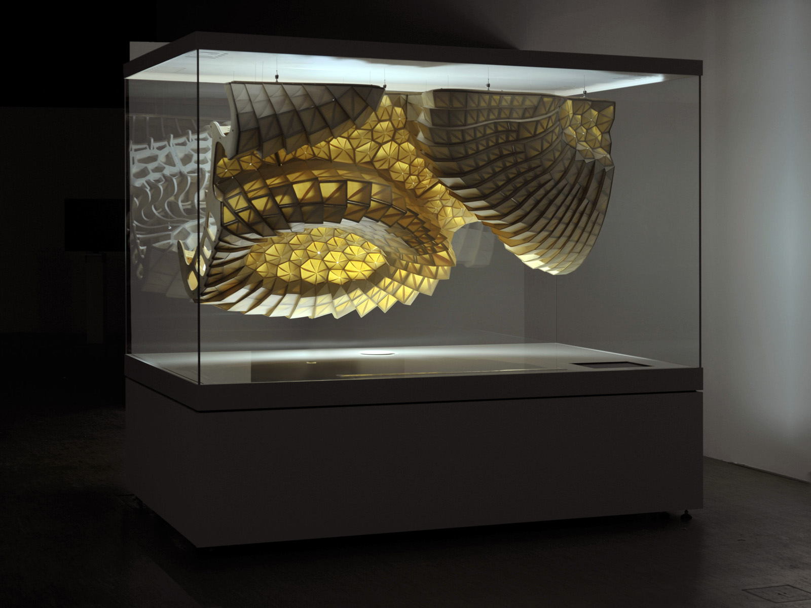
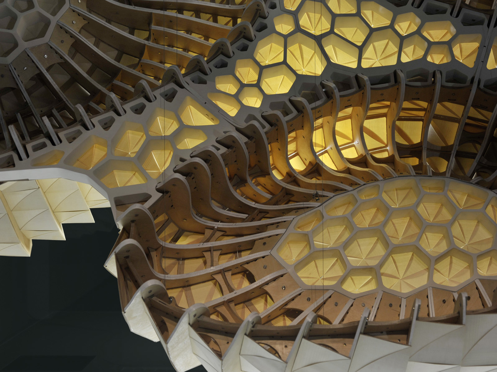

Internship project
for Prof. Achim Menges
(ICD, University of Stuttgart)
with Steffen Reichert
2012, Stuttgart

During my internship for Prof. Achim Menges, I worked on this project commissioned by Centre Pompidou Paris. It envisions an architectural skin that reacts to the climatic changes in its environment. Tessellated by single-side laminated thin veneer scales, the installation makes use of the differential expansion of the material complex, which causes the scales to curl and open when the relative humidity is high.

Using wood for all the primary components, the installation highlights how a well-established and biologically based construction material can be rethought to harness what is commonly considered a material flaw (warping) into an intelligently adaptive system that enhances climatic performance.

Together with Steffen Reichert, I developed the parametric model of the suspended structure, which served to simulate how the climate-active components bend according to their fibre direction and thus optimise them against jamming. Furthermore, I contributed to the setup for fabrication data generation, involving a cutting plotter and a milling robotic arm.

The climate-controlled box in which the piece was exhibited was developed by Transsolar Climate Engineering (Thomas Auer and Daniel Pianka) and was set up to produce a slowly oscillating humidity cycle, which would cause the structure to gradually open and close during the exhibition. The project was implemented with the help of Nicola Burggraf, Tobias Schwinn with Claudio Calandri, Nicola Haberbosch, Oliver Krieg, Marielle Neuser, Viktoriya Nikolova and Paul Schmidt.
More info here.